GeoMoose Quickstart¶
GeoMoose is a browser based mapping framework for displaying distributed cartographic data. It is particularly useful for managing spatial and non-spatial data within county, city and municipal offices (from which GeoMoose originated).
GeoMoose is a GIS data portal management framework. The installed version of GeoMoose on the Live DVD is an example configuration that displays an example set of layers.
Start GeoMoose¶
Go to the ”Browser Clients” folder on the desktop.
Click on the desktop icon ”Start GeoMoose”. This will launch the default browser which will navigate to the correct location automatically.
You will be presented with a web page displaying a demo interface of a GeoMoose instance.
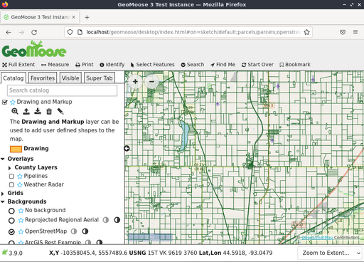
The Interfaces presented above shows:
A banner bar
A tool bar
A map window with navigation and zoom controls
A side menu with:
A ”Jump to” location pull down list
Control tabs starting with ”Catalog”, for displaying the layer list. As needed, additional tabs will appear: an ”Information” readout, a ”Custom” output tab, and others.
A Footer bar with:
Multiple coordinate readouts, one each for: X,Y (local dataset coordinates), LAT/LON (Decimal) and United States National Grid (USNG)
An editable pull down list for a view scales to choose from or define.
Identify a location¶
Click on the ”identify” (”i” in a circle icon) button in the top toolbar
Click a point on the map.
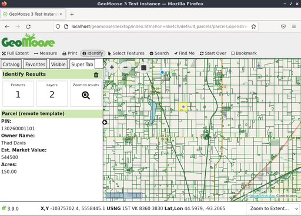
The catalog along the left side of the Map view will change to the ”Super Tab” - a place to where GeoMoose displays results of an action or asks for more information. In this case, it will show the results of a query of each active and identifiable layer for the point that you clicked in the map.
Use the measuring tool¶
The GeoMoose measure tool allows you to: * measure a point (return the coordinates of a picked point) * measure the distance along a potentially multi-segment line * measure the area of a polygon.
Click the double ended arrow icon in the top toolbar to start the measuring tool.
Choose to measure a point, line, or polygon.
Click on the map where you want to measure. To measure a point, just click the point on the map you want to measure. To measure a line or polygon click on the map for each vertex a of the line/polygon.
Double click to end the line/polygon.
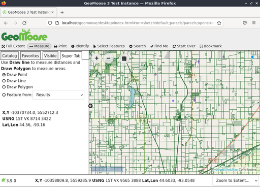 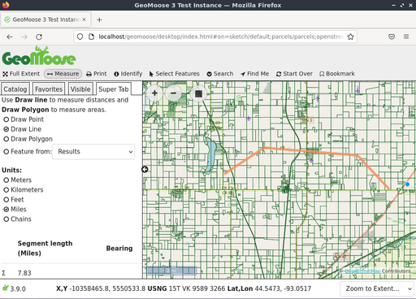
Muista
you can also measure a pre-existing feature on the map (if it is from a vector layer, including previous query results) without having to manually trace over it.
Select features¶
You can select features from a Point, Line, Polygon, or from an existing feature. To start, click on the ”Select Features” icon (mouse cursor icon), pick point, line, polygon and start drawing your selection in the map. You can double click the last point to finish the drawing process. If you want to adjust your selection you can do that with the ”Modify Feature” option.
You also have the option to select features based on a buffered version of what you drew. The default is to buffer by ”0” which does nothing. Positive values expand what you drew by that distance, negative values shrink your drawing.
Select which layer you want to select features from using the ”Query Layer” select-box. Note: not all layers can be used with the Select Features tool. To be available for selection, a layer needs to be a vector layer and be configured for selection in the mapbook.
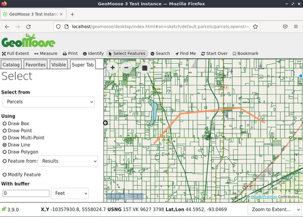
Finally, click the ”Go” button to actually select the features. GeoMoose will return a summary of what was selected in the Super Tab as well, highlight the selected features on the map, and show an attribute table of the selected features.
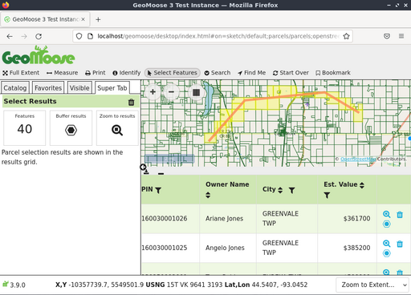
If you hover over a line in the table, the corresponding feature on the map will be highlighted. Additionally, you can use the funnel icons in the table header to further filter results, and use the triangle icons in the table header to sort results. The results can be downloaded as a CSV file using the download icon to the top and left of the table.
Search for features¶
You can also search for features by attribute. To start, hover over the ”Search” menu in the toolbar and then click on the ”Search Parcels” icon. Enter your search parameters in the Super Tab then click the ”Go!” button.
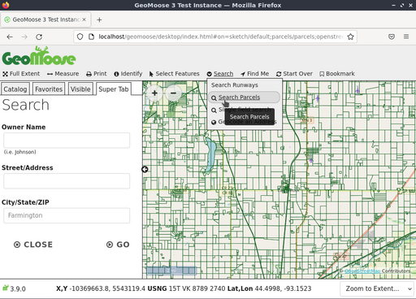
The following screenshot demonstrates a search of all parcel owners containing the name ”frank”.
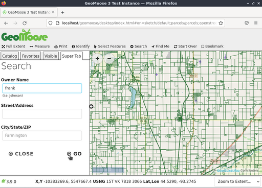
Three results appear in the list and are highlighted on the map.
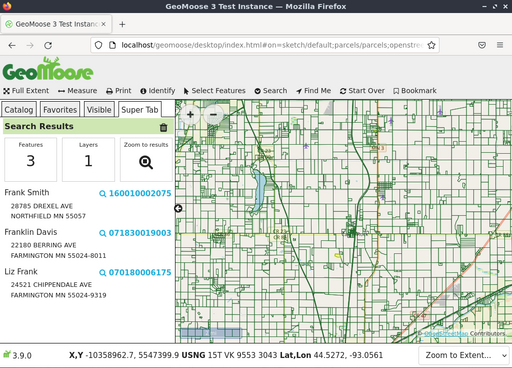
Clicking the magnifying glass icon/parcel number will zoom you to the specific parcel as illustrated in the following screenshot.

Print the map¶
This next screenshot shows how the Print tool looks as provided with demo for GeoMoose. When you click on the Print tool, a dialog appears which asks for a title for the printed map, the page size and rotation, printed resolution, and shows a preview of what will be printed.
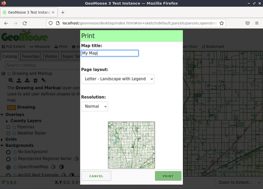
Clicking the Print button in the dialog will generate a PDF printout that you can open or save.
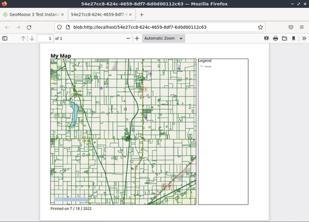
What next?¶
This is only the first step on the road to using GeoMoose. There is a lot more functionality you can try.
GeoMoose Project home
GeoMoose Tutorial